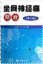
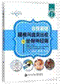
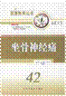
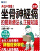

| date | 书名 | 图片 | 作者 | 出版社 | 备注1 | 备注2 |
| 2013 | 坐骨神经痛防治 |  | 陈东银 | 金盾 | 广州图书馆 | 北7楼0026列B面05架03层 |
| 2015 | 自我调理腰椎间盘突出症与坐骨神经痛 |  | 崔林华，李计留，齐丛会 | 西安交通大学 | 淘宝 | |
| 专家与您面对面 坐骨神经痛 | 中国医药科技 | 淘宝 | ||||
| 2000 | 健康教育丛书 坐骨神经痛 |  | 张文康 | 淘宝 | ||
| 坐骨神經痛的最新療法 |  | 久野木順 | 淘宝 | |||
| 腰椎间盘突出症 中医特色疗法 | 马勇 王建伟 | 人民军医 | 购书中心 | |||
| 坐骨神经痛的中医治疗 | VCD | 人民卫生 | 坐骨神经痛是指沿坐骨神经通路及其分布区域的疼痛。本片围绕坐骨神经痛阐述了相关的解剖、 病因病机、诊断、临床表现、辨证论治等内容。在治疗方面，本片着重介绍了中药结合针灸治疗的方法。此外，还介绍了按摩疗法、中药熏蒸疗法，功能主要炼等疗 法。帮助学生及临床医师学习和掌握治疗坐骨神经痛的基本方法和基本技能。本片适用中医学院学生及临床术医师。本片由广州中医药大学制作，片长35分钟。 | |||
| 实用腰椎间盘突出症康复指南 | 黄国付 | 人民军医 | 图书馆 | |||